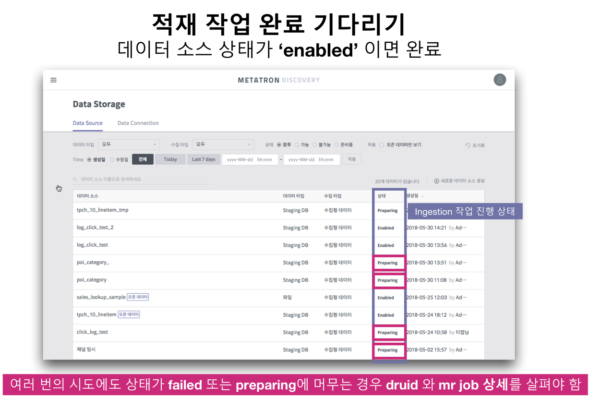
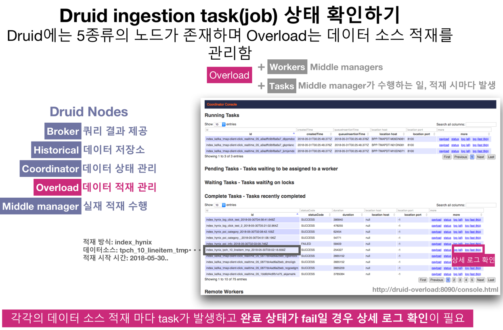
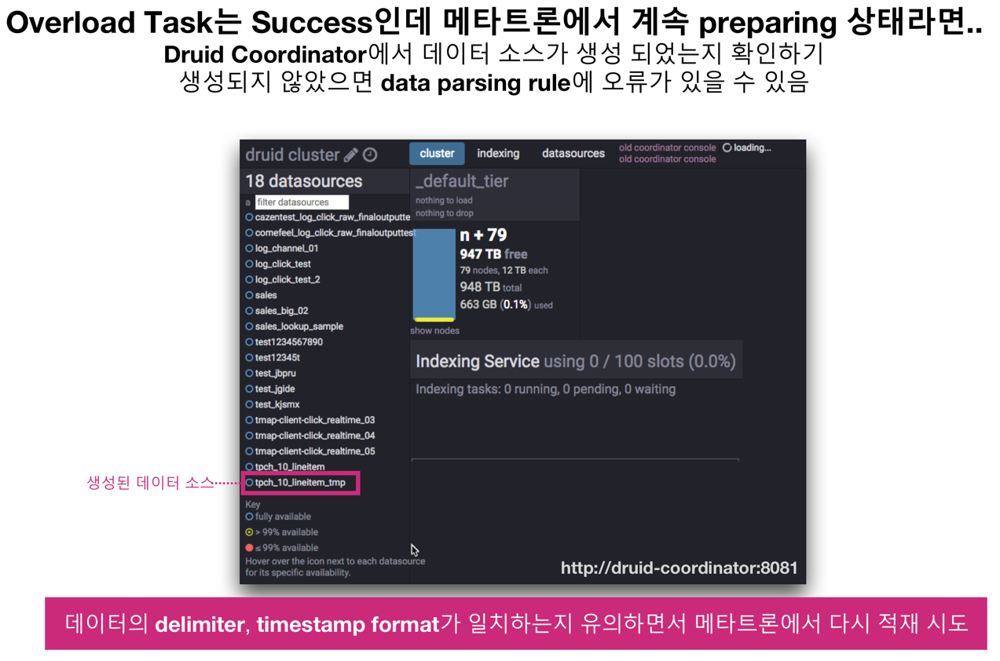
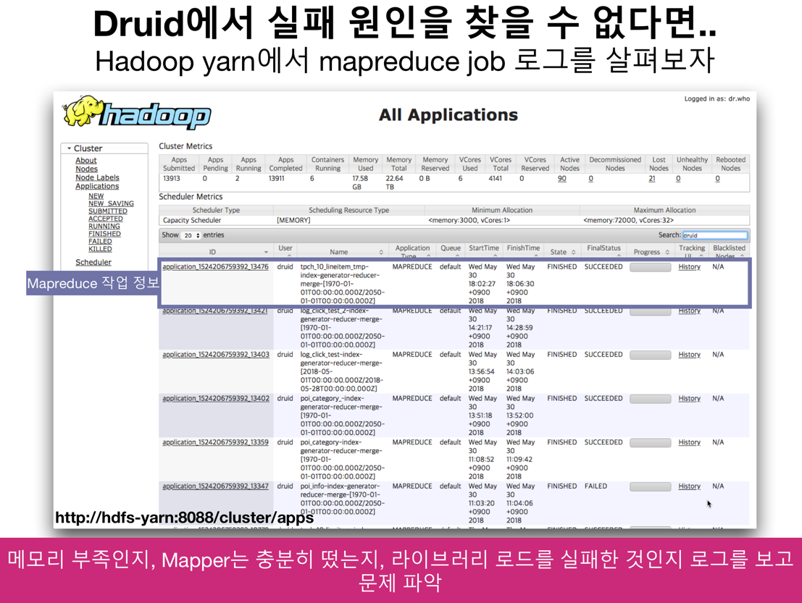

2019-12-05
Overview
기본 환경
Hadoop
Metatron Engine (Druid)
Install
Console
Ingestion
Step01. 적재하기
Step02. 적재상태 확인
Step03. Engine Console 확인
Step04. Hadoop Console에서 확인
Metatron Discovery
Metatron Anomaly
Metatron Integrator
Metatron Discovery Install Docs
Docs
»
Metatron Engine (Druid)
»
Ingestion
View page source
Ingestion
¶
Step01. 적재하기
¶
Step02. 적재상태 확인
¶

Step03. Engine Console 확인
¶


Step04. Hadoop Console에서 확인
¶
